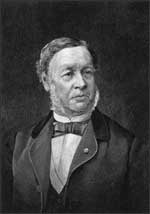

Theodor Schwann
1810–1882
Theodor Schwann was born in Prussia, a country bordering Russia that eventually became Poland and Germany, in 1810. Schwann studied medicine and loved looking at materials through the microscope. He was aware of Robert Hooke's discovery of cell walls and Schleiden's (another pioneer of cell biology) hypothesis that cells are the basic building blocks of plants. Based on this information and his own observations, Schwann
published a research paper that included illustrations of the animal
material that he observed. While he acknowledged that plant cells
and the structures that he was studying looked very different, he
suggested that animals were made of cells as well. Schwann based
this hypothesis on his observations that all cells, both plant and
animal, regardless of their size and shape, contained a nucleus.
Schwann studied medicine and became particularly interested in the way the body functions. While studying the process of digestion, he discovered the stomach enzyme, pepsin.
As a professor of physiology at the University of Louvain in Belgium, Schwann studied yeast cells and their role in the chemical process
of fermentation. He concluded that yeast cells produce alcohol as
part of their cell processes. He later studied the muscle and nerve cells of animals and discovered cells that form a protective layer
around the nerve axon. These cells, now called Schwann cells, were
named after Theodor Schwann, the first person to observe them.